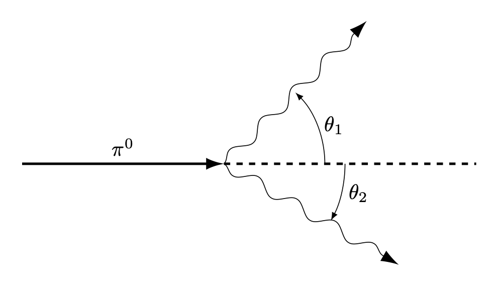

% %
%\[ \DeclarePairedDelimiters{\set}{\{}{\}} \DeclareMathOperator*{\argmax}{argmax} \]
1. Atoms in Motion
파인만 물리학 강의 1 권 1장 ~ 3장에 해당한다.
1.1 열이 단지 분자의 운동이라면 뜨거운 멈춘 공과 차가운 빠른 공의 차이는 무엇인가?
(해답). 공의 질량 중심은 멈춰 있지만 각 분자들은 빠르게 움직일 수 있으며, 공의 질량 중심은 빨리 움직이지만 공의 각 분자들은 천천히 움직일 수 있다.
1.2 모든 물체의 원자들이 끊임없이 움직인다면 화석 자국과 같은 영구적인 물체는 어떻게 가능한가?
(해답).
1.3 움직이는 기계의 마찰이 왜 그리고 어떻게 열을 만들어 내는지 정성적으로 설명하라. 또한 이 과정을 정반대로 했을 때 열이 유용한 움직임을 만들어 낼 수 없는지 정성적으로 설명해보라.
(해답).
1.4 화학자들은 고무 분자들이 길고 서로 교차하는 원자들의 사슬로 이루어졌다는 것을 발견했다. 고무를 늘리면 고무줄의 온도가 올라가는 이유를 설명하라.
(해답).
1.5 무게를 지탱하고 있는 고무줄에 열을 가하면 무슨 일이 벌어질지 설명하라.
(해답).
1.6 정 오각형 모양을 가진 결정이 없는 이유를 설명하라.
(해답).
1.7 지름이 \(d\) 인 쇠공을 매우 많이 가지고 있다고 하자. 그리고 부피 \(V\) 인 상자를 생각하자. 상자의 모든 치수는 \(d\) 보다 매우 크다. 상자가 담을수 있는 가장 많은 공의 수는 얼마인가?
(해답).
1.8 기체의 압력 \(P\) 는 기체 원자의 개수 밀도 \(n\), 원자의 평균 속력 \(\langle v\rangle\) 에 대해 어떻게 변하는가? (\(P\) 는 \(n\) 혹은 \(\langle v\rangle\) 에 비례해야 하는가? 아니면 더 크게 혹은 더 작게 변해야 하는가?)
(해답). 이상기체의 경우 \(P= nk_B T\) 이고 \(\langle v\rangle \propto T\) 임을 안다.
1.9 일반적인 기체의 부피는 0.001 \(\text{g/cm}^{3}\) 이며 액체 공기의 부피는 1.0 \(\text{g/cm}^{3}\) 이다.
(\(a\)) 일반적인 공기의 개수 밀도 \(n_G\) 와 액체 공기의 개수 밀도 \(n_L\) 을 구하라.
(\(b\)) 공기 분자의 질량 \(m\) 을 구하라.
(\(c\)) 상온(\(20\,^\circ \text{C}\)) 상압(1 atm) 에서 공기 분자가 충돌 사이에 진행하는 거리 \(l\) 을 구하라. 이를 평균 자유 거리(mean free path) 라고 한다.
(\(d\)) 보통의 대기에서 평균자유거리가 1 m 가 되기 위한 압력은 얼마인가?
(해답). \(\,\)(\(a\))
12. Relativisitic Kinematics and Dynamics. Mass and Rest Energy Equivalence
파인만 물리학 강의 1 권 15장, 16장에 해당한다.
12.1 상대속도가 \(x\) 방향의 \(V\) 인 두 관성기준틀에 대해 \(x,\,y,\,\,z,\,t\) 를 \(x',\,y',\,z',\,t'\) 으로 기술하라.
(해답). 식 2.2 에서 \(u=V\) 이다. 우선 \(y=y',\,z=z'\) 임을 안다. \(x,\,y\) 에 대해 풀면 다음을 얻는다.
\[ x=\dfrac{x'+ Vt'}{\sqrt{1-V^2/c^2}},\quad y=y',\quad z=z',\quad t= \dfrac{t'+Vx'/c^2}{\sqrt{1-V^2/c^2}} \]
12.2 연습문제 12.1 에서 얻은 변환식을 미분형태로 쓰고 \(dx/dt=v_x\) 를 \(v_x',\,V\) 를 이용하여 구하라. \(dy/dt\) 도 같이 하라.
(해답). 여기서 \(\gamma = 1/\sqrt{1-V^2/c^2}\) 은 상수이다. \[ \begin{aligned} dx = \gamma dx' + \gamma V dt',\quad dy = dy',\quad dz = dz',\quad dt = \gamma dt' + (V\gamma/c^2) dx' \end{aligned} \]
이므로
\[ \begin{aligned} \dfrac{dx}{dt} &= \dfrac{dx'+Vdt'}{dt' + (V/c^2) dx'} = \dfrac{v'_x + V}{1+ Vv'_x/c^2}, \\[0.3em] \dfrac{dy}{dt} &= \dfrac{dy'}{\gamma(dt' +(V/c^2) dx')} = \dfrac{v'_y}{\gamma(1+Vv_x/c^2)}. \end{aligned} \]
12.3 입자가 \(S\) 기준틀에서 \(x\) 축으로 \(v_x\) 의 속도와 \(a_x\) 의 가속도로 움직인다고 하자. \(S\) 기준틀에 대해 \(x\) 방향으로 \(V\) 의 속도로 움직이는, 그리고 좌표축이 평행한 \(S'\) 에서의 속도와 가속도를 구하라.
(해답). \(\gamma = 1/\sqrt{1-V^2/c^2}\) 에 대해
\[ dx' = \gamma (dx-Vdt),\quad dy' = dy,\quad dz'=dz,\quad dt' = \gamma (dt- Vdx/c^2) \]
이며, 12.2 로부터 \(v'_x = (v_x-V)/(1-Vv'_x/c^2)\) 이다. \[ \begin{aligned} a'_x &= \dfrac{dv'_x}{dt'} = \dfrac{d}{dt'}\left( \dfrac{v_x-V}{1 - Vv'_x/c^2}\right) \\[0.3em] &= \dfrac{dv_x/dt'}{1- Vv'_x /c^2} + \dfrac{v_x-V}{(1 - Vv'_x/c^2)^2}\dfrac{V}{c^2} \dfrac{dv_x}{dt'} \\[0.3em] &=\dfrac{1-V^2/c^2}{(1-Vv'_x/c^2)^2}\dfrac{dv_x}{dt'} \end{aligned} \]
여기서
\[ \dfrac{dv_x}{dt'}= \dfrac{dt}{dt'}\dfrac{dv_x}{dt} = \dfrac{1}{(dt'/dt)^{-1}}a_x = \dfrac{a_x}{\gamma (1-Vv_x/c^2)} \]
이므로
\[ a'_x = \dfrac{a_x}{\gamma^3 (1-Vv_x/c^2)^3} \]
이다.
\[ \begin{aligned} a'_y &= \dfrac{dv'_y}{dt'} = \dfrac{d}{dt'}\left(\dfrac{v_y}{\gamma(1-Vv'_x/c^2)}\right) = \dfrac{dv_y/dt'}{\gamma(1-Vv'_x/c^2)} + \dfrac{v_y}{\gamma(1-Vv'_x)^2} \dfrac{V}{c^2}\dfrac{dv_x}{dt'} \end{aligned} \]
여기서
\[ \dfrac{dv_y}{dt'}= \dfrac{dt}{dt'}\dfrac{dv_y}{dt} = \dfrac{a_y}{\gamma (1-Vv_x/c^2)} \]
이므로
\[ a'_y = \dfrac{a_y}{\gamma^2 (1-Vv_x/c^2)^2} + \dfrac{V v_y a_x/c^2}{\gamma^2 (1-Vv_x/c^2)^3} \]
이며, 같은 방법으로 \(a'_z\) 를 아래와 같이 구할 수 있다.
\[ a'_z = \dfrac{a_z}{\gamma^2 (1-Vv_x/c^2)^2} + \dfrac{V v_z a_x/c^2}{\gamma^2 (1-Vv_x/c^2)^3} \]
12.4 길이 \(L=5\,\text{m}\) 인 막대기가 관성기준틀 \(S\) 에 정지해 있다. 이 막대기는 \(x\) 축과 \(\theta = 30^\circ\) 만큼 기울어져 있다. \(S'\) 기준틀이 \(x\) 방향으로 \(v_x=c/2\) 의 속도로 평행하게 움직일 때 \(S'\) 에서 본 막대기의 길이와 기울기를 구하라.
(해답). \(L_x = 5 \cos \theta\), \(L_y = 5 \sin \theta\) 이며 \(v_x=c/2\) 에 대해 \(L'_x = \sqrt{3}L_x/2\), \(L'_y = L_y\) 이므로 \(L'=\sqrt{{L'_x}^2+{L_y}^2}=4.51\,\text{m}\) 이고 \[ \theta' = \arctan\left(\dfrac{L'_y}{L'_x}\right) = 39.69^\circ \]
이다.
12.5 뮤온은 대기의 높은 곳에서 형성되어 속도 \(v=0.990c\) 로 붕괴되 기 전까지 5.0 km 을 이동한다.
(\(a\)) 우리 관점에서 뮤온의 생존 시간 \(\Delta t\) 는 얼마인가? 뮤온의 기준틀에서의 생존 시간 \(\Delta t'\) 은 얼마인가?
(\(b\)) 뮤온의 기준틀에서 뮤온이 이동하는 대기의 두께 \(L'\) 은 얼마인가?
(해답). (\(a\)) \(\Delta t = 1.68\times 10^{-5}\text{ sec}\), \(\Delta t'= \sqrt{1-0.99^2}\Delta t = 2.38\times 10^{-5}\text{ sec}\)
(\(b\)) \(L'=\sqrt{1-0.99^2}L=7.05\,\text{km}\).
12.6 전자의 정지 에너지 \(m_ec^2=0.511 \text{MeV}\) 임을 보여라.
(해답). \(m_e = 9.109 \times 10^{-31}\,\text{kg}\) 이므로 \(m_ec^2 = 0.511\, \text{MeV}\)
12.7 질량 \(m\) 인 입자의 위치가 시간에 대해
\[ x=\sqrt{b^2+c^2t^2}-b \]
이다. 이 운동을 위해 가해져야 하는 힘 \(F\) 는?
(해답). \[ v= \dfrac{dx}{dt}= \dfrac{c^2t}{\sqrt{b^2+c^2t^2}},\qquad p = \dfrac{mv}{\sqrt{1-c^2}} \]
이며
\[ p= \dfrac{mv}{\sqrt{1-v^2/c^2}} \]
에 대해
\[ F = \dfrac{dp}{dt} = \dfrac{dv}{dt}\dfrac{m}{(1-v^2/c^2)^{3/2}} \]
이다.
\[ \dfrac{dv}{dt}= \dfrac{b^2c^2}{(b^2+c^2t^2)^{3/2}} \]
이며
\[ 1-\dfrac{v^2}{c^2} = 1- \dfrac{c^2t^2}{b^2+c^2t^2} = \dfrac{b^2}{b^2+c^2t^2} \]
이므로
\[ F= mc^2/b \]
이다.
12.8 미국에서 1965년도에 생산된 총 전기 에너지는 \(1.05 \times 10^{12} \, \text{kWh}\) 이다.
(\(a\)) 이 과정에서 얼마나 많은 질량이 에너지로 변환되었나?
(\(b\)) 이 에너지 변환이 중수소 (\(\text{D}_2\)) 가 핼륨으로 변환되는 과정을 통해 얻어진다면, 필요한 중수소를 공급하기 위해 얼마나 많은 부피의 중수가 초당 필요한가?
여기서 \(M_{\text{H}^2} = 2.0147\,\text{u}\), \(M_{\text{He}^4} = 4.0039\,\text{u}\) 이다.
(해답). (\(a\)) \(1 \text{ kWh} = 3600 \text{ J}\) 이므로 에너지 \(3.78\times 10^{18}\,\text{J}\) 에 해당하며 이에 필요한 질량은 \(42.058\,\text{kg}\) 이다.
(\(b\)) 1년에 \(3.78\times 10^{18}\,\text{J}\) 을 생산하면 초당 \(1.20\times 10^{11}\,\text{J}\) 을 생산해야 하며 이는 \(1.334 \times 10^{-6}\,\text{kg}\) 에 해당하는 질량이다.
\(1\,\text{u}=1.6605 \times 10^{-27}\,\text{kg}\) 이다. 2개의 중수소가 1개의 헬륨이 되는 변환에서의 질량 차이 \(\Delta M=0.0255 \,\text{u} = 4.234 \times 10^{-29}\,\text{kg}\) 이다.
따라서 필요한 중수소의 개수는 초당 \(6.301\times 10^{22}\) 이며 이는 중수(\(\text{D}_2\text{O}\)) 0.052 몰에 해당한다. 이는 중수 \(1 \text{cm}^3\) 에 해당한다. 그런데 해답지에는 \(2\text{cm}^3\) 인데 아마 반중수 (DHO) 를 생각해서였을까?
13. 상대론적 에너지와 운동량
파인만 물리학 강의 1 권 16장, 17장에 해당한다.
13.1 \(1\,\text{GeV}\) 전자의 속도 \(v\) 는 \(c\) 와 \(c-v = c/(8 \times 10^6)\) 정도임을 보여라.
(해답). \(m_ec^2=0.511\,\text{MeV}\) 이므로 \(v = 0.99999987c\) 이며 \((c-v)/c = 1/(7.66\times 10^6)\) 정도이다.
13.2 (\(a\)) 입자의 운동량 \(p\) 를 운동에너지 \(T\) 와 정지 에너지 \(mc^2\) 로 표현하라.
(\(b\)) 운동에너지와 정지에너지가 같을 때의 입자의 속도는 얼마인가?
(해답). (\(a\)) 상대론적 운동에너지 \(T= \gamma mc^2 - mc^2\) 이므로
\[ \gamma = \dfrac{T+mc^2}{mc^2} = \dfrac{1}{\sqrt{1-v^2/c^2}} \tag{1} \]
이다. 이로부터
\[ v = \dfrac{\sqrt{T^2 + 2mc^2T}}{T+mc^2} c \]
이며
\[ p = \gamma mv = \dfrac{T+mc^2}{mc^2} \cdot m\cdot \dfrac{\sqrt{T^2 + 2mc^2T}}{T+mc^2} c = \dfrac{\sqrt{T^2 + 2mc^2T}}{c}. \]
(\(b\)) (\(1\)) 로부터 운동에너지와 정지에너지가 같으면 \(\gamma = 2\) 이므로 \(v=\sqrt{3}c/2\).
13.3 양성자 질량 \(m_p = 938 \, \text{MeV}\) 이다. 우주방사선의 양성자는 대략 \(10^{10}\,\text{GeV}\) 정도의 에너지를 갖는 것으로 간접적으로 관측되었다. 이 에너지의 양성자가 105 광년 정도의 지름을 갖는 은하를 거쳤다고 할 때 양성자의 기준틀에서 \(\Delta t\) 는 어느정도인가?
(해답). \(\gamma = 10^{10}/0.938 \approx 1.0661\times 10^{10}\) 이며 속도는 거의 광속이므로 지구좌표계에서 5년이라고 간주할 수 있다.
\[ 10^5\text{ year}/\gamma \approx 296\,\text{sec} \]
13.4 전하 \(q\), 운동량 \(p\) 인 입자가 자기장 \(B\) 에서 반지름 \(R\) 인 원운동을 한다. 원운동 경로는 자기장에 직각 방향이다.
(\(a\)) 전자 전하 \(q_e\) 에 대해 \(q=Zq_e\) 이며 \(p\) 는 \(\text{MeV}/c\) 단위로 측정되었고 \(B\) 는 가우스 단위일 때 \(p,\,B,\,R\) 의 관계는?
(\(b\)) 운동에너지가 \(60\, \text{GeV}\) 이고 자기장 \(B=0.3 \, \text{gauss}\) 일 때 양성자의 곡률 반경은 얼마인가?
(해답).
13.5
(해답).
13.6 실험실에 정지해 있던 질량 \(M\) 인 물체가 각각 질량 \(m_1,\,m_2\) 인 두 부분으로 붕괴되었다. 각 부분의 상대론적 에너지 \(T_1,\,T_2\) 는 무엇인가?
(해답). 붕괴된 후 각각의 운동량과 에너지를 \(p_1,\,p_2\), \(E_1,\,E_2\) 라고 하자. 운동량 보존에 의해 \(p_1 = -p_2\) 이며, 에너지 보존에 의해
\[ Mc^2 = E_1 + E_2 = \sqrt{p_1^2c^2 + m_1^2c^4} + \sqrt{p_2^2c^2 + m_2^2c^4} \]
이다. \(p=p_1 = -p_2\) 라고 놓으면
\[ (Mc^2-E_1)^2 = {E_2}^2 = p^2c^2+m_2^2 c^4 \tag{1} \]
이며
\[ (Mc^2-E_1)^2 = M^2c^4 - 2Mc^2E_1 + p^2c^2 + m_1^2c^4 \tag{2} \]
이므로 (\(1\)), (\(2\)) 를 연립하여 풀면
\[ E_1 = \dfrac{(M^2 + m_1^2 - m_2^2)c^2}{2M} \tag{3} \]
이다. 같은 방법으로
\[ E_2 = \dfrac{(M^2 + m_2^2 - m_1^2)c^2}{2M} \tag{4} \]
임을 보일 수 있다. 따라서,
\[ \begin{aligned} T_1 &= E_1 - m_1c^2 = \dfrac{((M-m_1)^2- m_2^2)c^2}{2M} \\[0.3em] T_2 &= E_2 - m_2c^2 = \dfrac{((M-m_2)^2- m_1^2)c^2}{2M} \end{aligned} \tag{5} \]
13.7 정지해 있는 파이온 (\(m_\pi = 273\, m_e\)) 이 뮤온 (\(m_\mu = 207\, m_e\)) 와 중성미자 (\(m_\nu = 0\)) 으로 붕괴되었다. 뮤온의 운동에너지와 운동량 (\(T_\mu,\, p_\mu)\) 와 중성미자의 운동에너지와 운동량 (\(T_\nu,\, p_\nu\)) 를 \(\text{MeV}\) 단위로 구하라.
(해답). 13.6 의 해답의 식 (\(5\)) 로 부터
\[ T_\mu = \dfrac{66^2m_e^2 c^2}{546 m_e} =4.08 \, \text{MeV},\quad T_\nu = 29.65 \,\text{MeV}. \]
또한 13.2 의 해답에서 \(p=\sqrt{T^2+2mc^2T}/c\) 임을 보였다. 이를 이용하면 \[ p_\nu = T/c = 29.65 \, \text{MeV}/c \]
이며 운동량 보존에 의해 \(p_\mu = p_\nu\) 이다.
13.8 질량 \(m\) 인 들뜬 원자가 주어진 좌표계에서 정지해 있다. 이 원자가 광자를 방출하고 \(\Delta E\) 만큼의 에너지를 잃었다. 원자의 recoil 을 고려하여 광자의 에너지 \(E_\gamma\) 를 구하라.
(해답). 빛을 방출 한 후 원자의 정지질량 \(M= m - \Delta E/c^2\) 이다. 방출 전 원자의 총 에너지 \(E_0 = mc^2\) 이고 운동량 \(p_0 = 0\) 이다. 광자의 에너지 \(E_\gamma\) 에 대해 광자의 운동량 \(p_\gamma = E_\gamma/c\) 이다. 운동량 보존에 의해 빛을 방출 한 뒤의 원자의 운동량 \(p_1=-p_\gamma\) 이다. 밫을 방출 한 후 원자의 총 에너지 \(E_1\) 은
\[ E_1 = \sqrt{p^2c^2+M^2c^4} = \sqrt{E_\gamma^2 + M^2c^4} \]
이다. 또한 에너지 보존에 의해
\[ mc^2 = E_1+E_\gamma = E_\gamma + \sqrt{E_\gamma^2 + M^2c^4} \]
이로부터, 그리고 \(M= m - \Delta E/c^2\) 를 대입하면
\[ \begin{aligned} E_\gamma &= \dfrac{(m^2-M^2)c^2}{2m} = \Delta E - \dfrac{(\Delta E)^2}{2mc^2} \end{aligned} \]
이다.
13.9 질량 \(m\) 인 입자가 \(v=4c/5\) 의 속도로 움직이다가 정지한 비슷한 입자와 비탄성적으로 충돌하였다.
(\(a\)) 합쳐진 입자의 속도 \(V\) 를 구하라.
(\(b\)) 합쳐진 입자의 질량 \(M\) 을 구하라.
(해답). (\(a\)) \(v=4c/5\) 인 경우 \(\gamma = 5/3\) 이다. 합쳐진 입자의 속도 \(V\) 에 대해 \(\gamma_V = 1/\sqrt{1-V^2/c^2}\) 이라고 하자. 운동량 보존에 의해
\[ \gamma mv = \dfrac{4mc}{3}=\gamma_V MV \tag{1} \]
이며 에너지 보존에 의해
\[ \gamma mc^2 +mc^2 = \dfrac{8}{3}mc^2=\gamma_V Mc^2 \tag{2} \]
이다. (\(1\)), (\(2\)) 를 나누면 \(V=c/2\) 임을 안다.
(\(b\)) \(\gamma_V = 2/\sqrt{3}\) 이므로 \(M=4\sqrt{3}m/3\) 이다.
13.10 버클리의 베타트론은 양성자를 높은 에너지로 가속시켜 아래 반응과 같이 양성자-반양성자 쌍을 만들기 위해 설계되었다.
\[ p + p \to p+p+(p+\overline{p}). \]
이 반응의 문턱에너지는 위 반응식의 오른쪽 항의 네 입자가 질량 \(M=4m_p\) 인 하나의 입자처럼 움직이는 경우에 해당한다. 타겟 양성자가 충돌 전에 정지해 있을 때 이 문턱 상태에 도달하려면 입사하는 양성자의 운동에너지 \(T\) 는 얼마여야 하는가?
(해답). 에너지 보존에 의해
\[ 2m_pc^2 + T = \gamma Mc^2 \tag{1}. \]
운동량 보존에 의해
\[ \dfrac{\sqrt{T^2+2m_pc^2 T}}{c} = \gamma MV \tag{2} \]
이로부터 \(V\) 와 \(\gamma\) 를 구하면
\[ V=\dfrac{c\sqrt{T}}{\sqrt{T+2m_pc^2}},\qquad \gamma = \dfrac{\sqrt{T+2m_pc^2}}{\sqrt{2m_pc^2}}. \tag{3} \]
위의 \(\gamma\) 를 (\(1\)) 에 대입하면
\[ 2m_p c^2+T = \dfrac{\sqrt{T+2m_p c^2} 4m_p c^2}{\sqrt{2m_pc^2}} \]
이며 이로부터
\[ T=6m_pc^2 = 5.63\,\text{GeV} \]
를 얻는다.
13.11 전자-전자 충돌로부터 양성자-반양성자를 생산하는 아래와 같은 반응에서의 문턱 운동 에너지 \(T_e\) 를 구하라.
\[ e^-+e^- \to e^- + e^- + p^- + p^+. \]
여기서 \(m_e \approx 0.5\, \text{MeV}\), \(m_p \approx 1\, \text{GeV}\) 를 사용하고 13.10 의 문턱에너지와 비교하라.
(해답). \(M=2m_e+ 2m_p\) 라고 놓자. 에너지 보존에 의해
\[ 2m_e c^2 + T_e = \gamma Mc^2. \tag{1} \]
운동량 보존에 의해
\[ \dfrac{\sqrt{T_e^2+ 2m_ec^2 T_e}}{c} = \gamma MV. \tag{2} \]
이로부터 \(V\) 와 \(\gamma\) 를 구하면
\[ V= \dfrac{c\sqrt{T_e}}{\sqrt{T_e + 2m_ec^2}},\qquad \gamma = \dfrac{\sqrt{T_e + 2m_ec^2}}{\sqrt{2m_e c^2}} \tag{3}. \]
\(\gamma\) 를 (\(1\)) 에 대입하면
\[ T_e = \dfrac{(M^2-4m_e^2)c^2}{2m_e} = \dfrac{(4m_p^2+ 8m_em_p)c^2}{2m_e} \approx 4004 \, \text{GeV}. \]
13.12 양성자-반양성자 쌍은 정지한 양성자가 광자를 흡수하는 아래 과정에 의해서도 생성된다.
\[ \gamma + p \to p + (p+\overline{p}). \]
광자가 가져야 하는 최소한의 에너지 \(E_\gamma\) 는 얼마인가? \(E_\gamma\) 를 양성자 에너지 \(m_pc^2\) 으로 나타내고 \(p-p\) 충돌이나 \(e-e\) 충돌에 의한 에너지와 비교하라.
(해답). 에너지 보존에 의해
\[ E_\gamma + m_pc^2 = \gamma_\gamma (3m_p)c^2. \tag{1} \]
주어진 식의 우변의 세 입자가 같은 속도 \(V\) 로 움직인다고 하자. 운동량 보존에 의해
\[ p_\gamma = \gamma_\gamma (3m_p)V. \tag{2} \]
\(E_\gamma = p_\gamma c\) 이며 위 두 식을 나누면
\[ \dfrac{V}{c} = \dfrac{p_\gamma}{p_\gamma + m_p c} \]
이므로
\[ \gamma_\gamma = \dfrac{p_\gamma + m_p c}{\sqrt{(m_pc)^2 + 2p_\gamma m_pc}} \]
이다. 이 \(\gamma_\gamma\) 를 (\(1\)) 에 대입하면
\[ p_\gamma = 4 m_p c \]
이므로
\[ E_\gamma = p_\gamma c = 4m_p c^2 = 3.752 \,\text{GeV}. \]
13.13 질량 \(m_p\) 인 양성자가 정지해 있는 양성자와 전면충돌을 하면 아래와 같은 과정을 통해 \(\pi\)-메존 을 생성한다.
\[ p+p \to p+p+\pi. \]
\(\pi\)-메존의 질량 \(m_\pi\) 는 \(m_p\) 에 비해 매우 작다.
(\(a\)) 입사 양성자의 문턱 에너지 \(T_p\) 를 구하라.
(\(b\)) 문턱 상태에서 메존의 운동에너지 \(T_\pi\) 는 얼마인가?
(\(c\)) 비 상대론적으로 계산했을 때와의 오차에 대해 근사하라.
(해답). (\(a\)) 충돌 후 우변의 세 입자의 속도를 \(V\) 라고 하고 \(\gamma = 1/\sqrt{1-V^2/c^2}\) 라고 하자. 에너지 보존에 의해
\[ T_p + 2m_pc^2 = \gamma (2m_p + m_\pi)c^2. \tag{1} \]
운동량 보존에 의해
\[ \dfrac{\sqrt{T_p^2+2m_pc^2 T_p}}{c} = \gamma (2m_p + m_\pi)V. \tag{2} \]
이다. 이로부터
\[ V=\dfrac{c\sqrt{T_p}}{\sqrt{T_p + 2m_p c^2}},\qquad \gamma = \dfrac{\sqrt{T_p + 2m_pc^2}}{\sqrt{2m_pc^2}} \]
이다. (\(1\)) 에 대입하면
\[ T_p = 2m_\pi c^2 + \dfrac{m_\pi^2c^2}{2m_p} \approx 279\,\text{MeV} \]
(\(b\)) \(T_\pi = \gamma m_\pi c^2 - m_\pi c^2 \approx 101 \, \text{MeV}\)
(\(c\))
13.14 \(\pi^0\)-메존은 두 \(\gamma\) 선으로 붕괴된다. 이 때 메존은 정지해 있을 수도 있고 움직이고 있을 수도 있다. \(\pi^0 \to \gamma+\gamma\).

(\(a\)) 붕괴되는 \(\pi^0\) 가 속도 \(\boldsymbol{v}\) 와 질량 \(m_\pi\) 를 가지며 방출되는 \(\gamma\) 선이 원래 방향에 대해 \(\theta\) 의 각으로 방출될 때, \(\gamma\) 선의 에너지를 \(m_\pi,\, v,\,\theta\) 로 표현하라.
(\(b\)) \(\gamma\) 선이 가질 수 있는 최대 에너지 \(E_\text{max}\) 와 최소 에너지 \(E_\text{min}\) 는 무엇인가? 이 에너지에 대해 방출 각은 무엇인가?
(\(c\)) \(\pi^0\) 의 속도에 독립적인 \(E_\text{max}\) 와 \(E_\text{min}\) 의 관계가 존재하는가? 그리고 그 물리적 의미는 무엇인가?
(해답). 그림에서 \(\theta=\theta_1\) 으로 놓자. \(\gamma = 1/\sqrt{1-v^2/c^2}\) 이라고 하고 \(\theta_1\) 으로 방출되는 광자의 운동량과 에너지를 \(p_1,\,E_1\), \(\theta_2\) 로 방출되는 광자의 운동량과 에너지를 \(p_2,\,E_2\) 라고 하자. \(E_1=p_1c,\, E_2=p_2c\) 의 관계를 갖는다.
(\(a\)) 에너지 보존에 의해
\[ \gamma m_\pi c^2 = p_1c + p_2 c. \tag{1} \]
\(\pi^0\) 의 운동방향과 그 직각방향에 대한 운동량 보존에 의해
\[ \begin{aligned} \gamma m_\pi v &= p_1 \cos \theta_1 + p_2 \cos \theta_2, \\[0.3em] 0 &= p_1 \sin \theta_1 + p_2 \sin \theta_2. \end{aligned} \tag{2} \]
위 식에서 \(p_2\) 를 먼저 계산하면
\[ \begin{aligned} p_2^2 &= (\gamma m_\pi v- p_1 \cos \theta_1)^2 + p_1^2 \sin \theta_1^2 \\[0.3em] &= \gamma^2 m_\pi^2 v^2 - 2\gamma m_\pi v p_1 \cos\theta_1 + p_1^2 \end{aligned} \]
이며 이 식을 (\(1\)) 에 대입하면
\[ (\gamma m_\pi c^2 - p_1 c) = p_2 c = \sqrt{\gamma^2 m_\pi^2 v^2 - 2\gamma m_\pi v p_1 \cos\theta_1 + p_1^2}c \]
이다. 왼쪽과 오른쪽을 제곱하여 정리하면 \(p_1\) 을 얻고 \(E_1=p_1c\) 이므로
\[ E_1=p_1c = \dfrac{\gamma c^2 m_\pi }{2(1-v\cos\theta_1/c)}. \]
(\(2\)) \(E_1\) 이 가질 수 있는 최대 에너지와 최소 에너지는 \(\cos\theta_1\) 의 값에 의해 결정된다.
\[ E_\text{max} = \dfrac{\gamma c^2m_\pi}{2(1-v/c)},\qquad E_\text{min} = \dfrac{\gamma c^2 m_\pi}{2(1+v/c)}. \]
(\(3\))